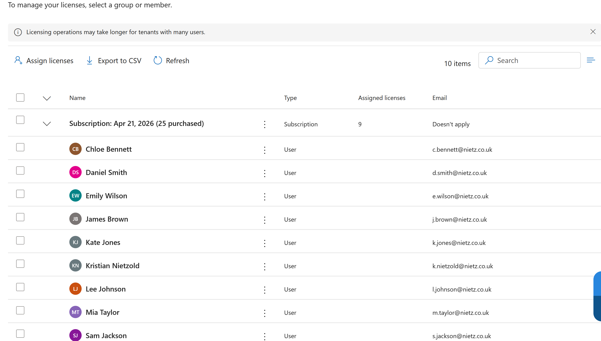
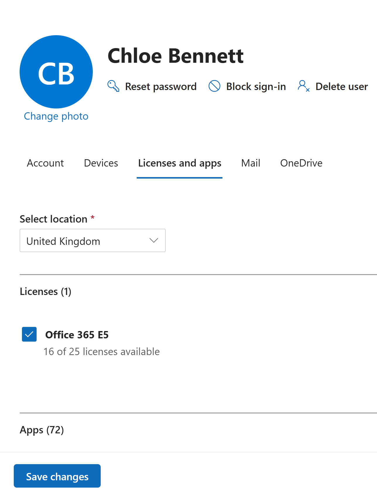
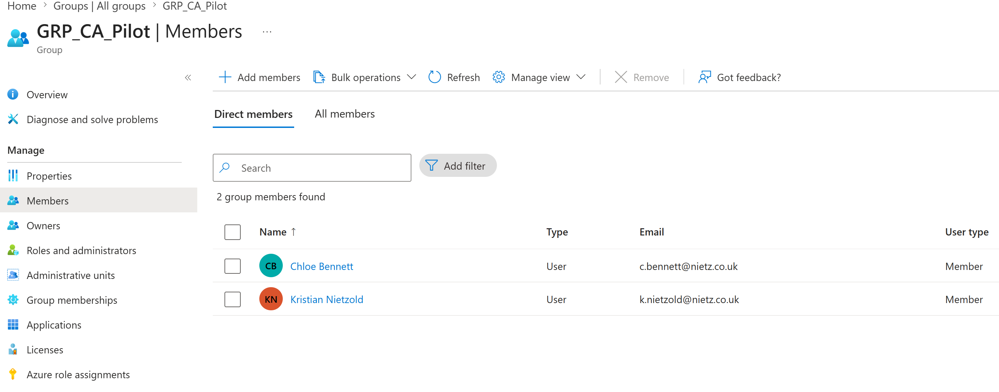
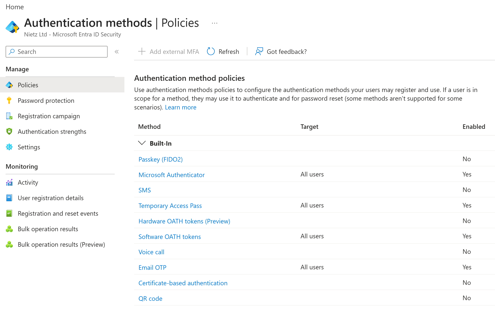
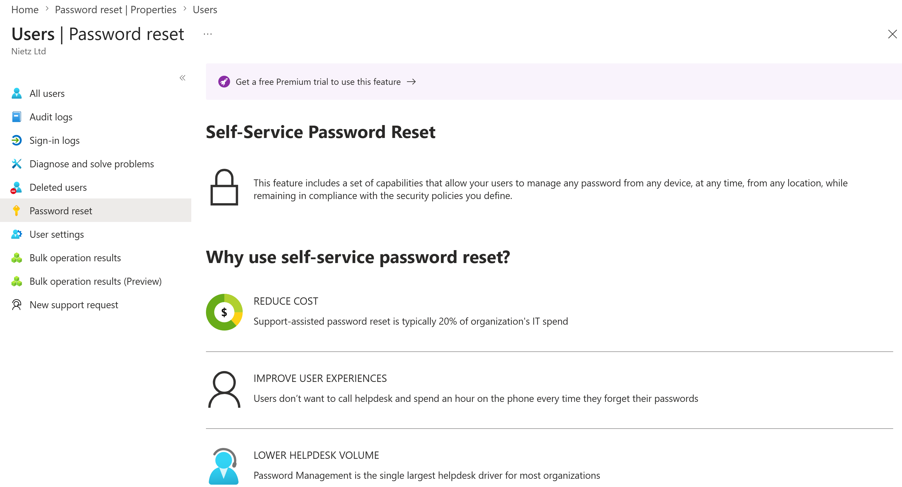
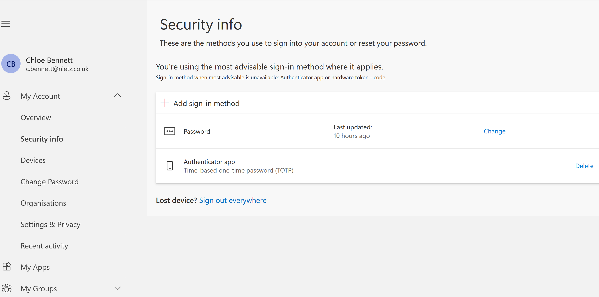
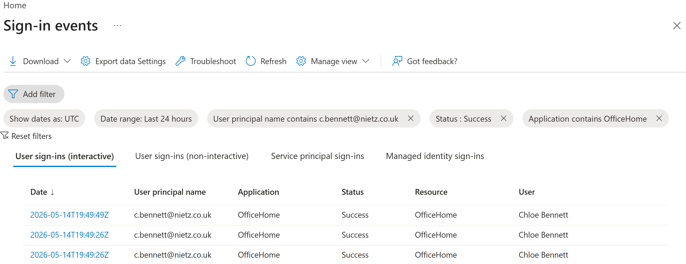

Lab 06: MFA, Password Reset and Licensing
Validated the Nietz Ltd Microsoft 365 account-security baseline across Office 365 E5 licensing, MFA pilot scope, authentication methods, user security information, Self-Service Password Reset readiness and Entra sign-in evidence.
Overview
In this lab, I built on the Microsoft 365 user administration work completed in Lab 05. I reviewed the Office 365 E5 licensing baseline for the existing @nietz.co.uk cloud identities, validated user-level licence assignment, checked the controlled MFA pilot scope, confirmed available authentication methods, reviewed Self-Service Password Reset readiness, and validated Chloe Bennett's security information and sign-in logs.
This lab keeps the same Nietz Ltd environment established across Labs 01-05: on-premises Active Directory uses corp.nietz.co.uk, while Microsoft 365 user sign-in uses nietz.co.uk. Hybrid identity is still planned for Lab 12 and was not configured in this lab.
Objective
The objective was to produce clean build evidence for Microsoft 365 account security and licensing readiness before moving into Exchange Online and Outlook. The lab validated Office 365 E5 licence usage, user-level licence assignment, pilot group targeting, authentication method availability, user-side MFA/security information, Self-Service Password Reset readiness, and successful OfficeHome sign-in events.
Environment
| Component | Value |
|---|---|
| Company | Nietz Ltd |
| On-premises AD Domain | corp.nietz.co.uk |
| NetBIOS Name | CORP |
| Microsoft 365 / Tenant Domain | nietz.co.uk |
| Tenant Admin | admin@nietz.co.uk - setup/global admin, intentionally unlicensed |
| Daily Admin | k.nietzold@nietz.co.uk - licensed daily administrator |
| Primary Validation User | c.bennett@nietz.co.uk |
| Pilot Group | GRP_CA_Pilot |
| Previous Lab Dependency | Lab 05: Microsoft 365 User Admin |
Configuration
1. Office 365 E5 Licensing Baseline
I reviewed the Office 365 E5 licensing baseline before applying account security checks. This confirmed assigned licence usage and validated that the core Nietz Ltd user accounts, including Mia Taylor, were present with the correct @nietz.co.uk primary email format.

@nietz.co.uk email format.2. User-Level Licence Assignment
I opened Chloe Bennett's user record and confirmed that the Office 365 E5 licence was assigned with the United Kingdom usage location set.

3. MFA Pilot Scope
I confirmed that GRP_CA_Pilot contained the controlled pilot users c.bennett@nietz.co.uk and k.nietzold@nietz.co.uk.

GRP_CA_Pilot confirmed with Chloe Bennett and Kristian Nietzold as pilot members.4. Authentication Method Policies
I reviewed the Authentication methods policy page and confirmed which sign-in methods were enabled or disabled in the tenant.

5. Password Reset Readiness Review
I reviewed Self-Service Password Reset and confirmed that full SSPR rollout required Premium licensing or an eligible trial before it could be configured for the intended scope.

6. User Security Information
I validated Chloe Bennett's user-side security information and confirmed that an authenticator app method was registered for sign-in.

7. Entra Sign-In Log Validation
I filtered Entra sign-in events for Chloe Bennett and confirmed successful OfficeHome sign-ins after the licence and authentication readiness checks.

Validation
The lab was validated when the Office 365 E5 licensing baseline showed the expected assigned users, Chloe Bennett's Office 365 E5 licence was confirmed, GRP_CA_Pilot contained the intended pilot users, authentication methods were reviewed, Chloe Bennett's security information showed an authenticator app method, and Entra sign-in events showed successful OfficeHome access.
Self-Service Password Reset was reviewed but not configured because the tenant prompted for Premium licensing. This was recorded as a deferred item for a later Business Premium or Entra Premium-enabled phase.
Key Technical Outcomes
This lab demonstrated the relationship between licence assignment, pilot group targeting, authentication method availability, user security information, Self-Service Password Reset readiness, and sign-in log evidence.
It also preserved a safe pilot approach so later Entra ID, Conditional Access, Intune, Exchange, and Outlook labs can build on controlled users and groups rather than broad tenant-wide changes.
Summary
- I reviewed the Office 365 E5 licensing baseline for the core Nietz Ltd users.
- I validated Office 365 E5 assignment for Chloe Bennett.
- I confirmed the
GRP_CA_Pilotgroup contained the intended pilot users. - I reviewed tenant authentication method policies for MFA readiness.
- I reviewed Self-Service Password Reset and deferred full setup until Premium licensing is active.
- I confirmed Chloe Bennett had an authenticator app registered in Security info.
- I validated successful OfficeHome sign-ins in Entra sign-in events.
- I left the tenant ready for Lab 07: Exchange Online.